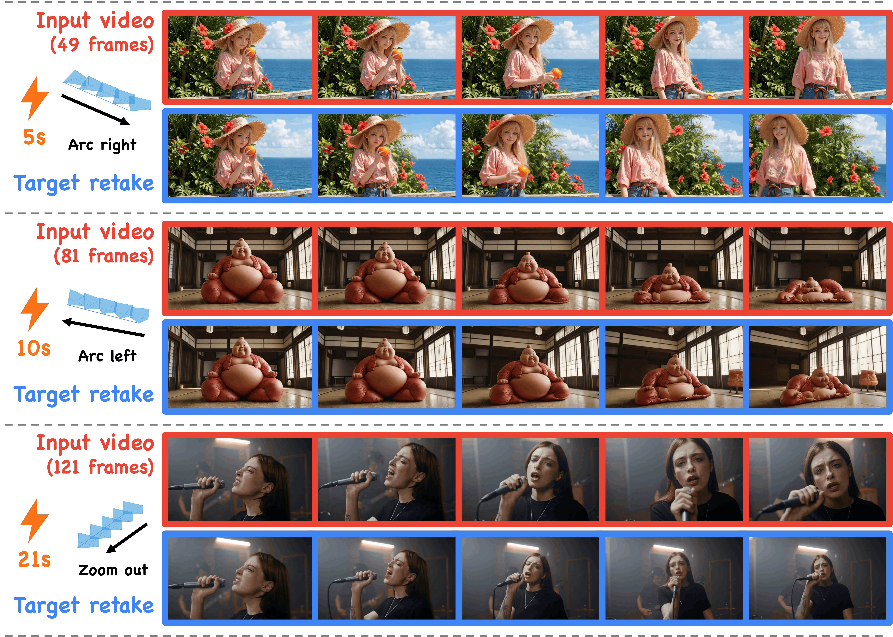
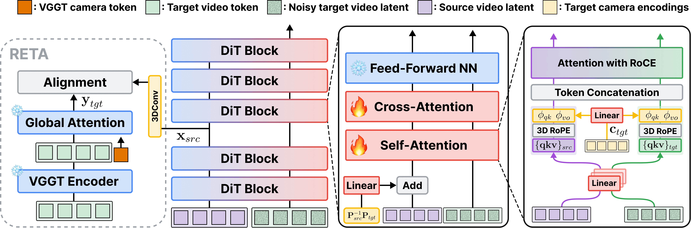

Lower sampling cost
NFE4-NFE vs. 2×50-NFE baselines
arXiv · 2026
Few-Step Generative Rendering via Camera-Controlled Video MeanFlow
1EverEx 2Yonsei University 3Korea University
†Corresponding authors

4-NFE vs. 2×50-NFE baselines
than even multi-step baselines
than few-step baselines
than even multi-step baselines
Naive few-step sampling introduces discretization error, which manifests in generative rendering as sampling-step-dependent camera motion.
For the same scene and target camera trajectory, changing only the number of sampling steps can lead to substantially different realized camera trajectories.
Distill those models down to 4 steps, and performance degrades because their multi-step dynamics are difficult to approximate with only a few sampling steps.
FlashRender starts by enforcing the consistent camera control. We find that this significantly lowers denoising trajectory curvature, facilitating step distillation.
FlashRender is fine-tuned from Wan2.1-1.3B-CamCtrl in three stages, each designed to address a distinct challenge in few-step generative rendering.

Aligns intermediate source-video representations with target-view features from a frozen VGGT encoder. This internalizes the geometric transformation, enabling consistent camera control and reducing the trajectory curvature.
Building on the lower-curvature denoising trajectory induced by RETA, we fine-tune the multi-step model with the MeanFlow objective to learn average velocity fields that shortcut the full denoising trajectory, effectively mitigating discretization error.
The MeanFlow model is rolled out using the same four-step schedule as inference and optimized on its own samples with DMD and an adversarial objective, correcting self-rollout errors caused by the training–inference mismatch.
With RETA, the realized camera trajectory remains consistent across sampling steps.
A straighter denoising trajectory is easier to approximate with only a few steps, facilitating subsequent step distillation. RETA consistently lowers the curvature throughout the schedule, achieving the lowest curvature along all baselines.
C(ti) = ‖ (ẑi − ẑi−1) / (ti − ti−1) − (X1 − X0) ‖22 — how far each denoising step veers from the straight line between noise X1 and data X0, squared. A straighter denoising trajectory is easier to approximate with only a few steps.
RETA enables the MeanFlow model to more accurately shortcut the full denoising trajectory and effectively mitigate discretization error during few-step sampling.
With RETA, video quality improves consistently across all three stages. More accurate trajectory shortcutting in turn enables better on-policy distillation.
Results on the DAVIS dataset — 50 source videos × 10 target trajectories.
| Method | Visual Quality | Geometric Consistency | Camera Accuracy | |||
|---|---|---|---|---|---|---|
| Aesthetic ↑ | Imaging ↑ | Dyn-MEt3R ↑ | MEt3R ↓ | TransErr ↓ | RotErr ↓ | |
| Multi-step (2×50-NFE) | ||||||
| CogNVS | 0.2160 | 0.4300 | 0.6845 | 0.4036 | 0.0768 | 10.878 |
| TrajectoryCrafter | 0.5046 | 0.6071 | 0.7338 | 0.3272 | 0.0697 | 9.115 |
| Vista4D | 0.5095 | 0.6527 | 0.7812 | 0.3123 | 0.0223 | 2.371 |
| GCD | 0.3998 | 0.4928 | 0.6898 | 0.4438 | 0.1062 | 22.853 |
| ReCamMaster | 0.5064 | 0.6461 | 0.7857 | 0.3472 | 0.0292 | 2.347 |
| ReDirector | 0.5149 | 0.6668 | 0.8477 | 0.3073 | 0.0165 | 1.666 |
| GeoAlign | 0.5250 | 0.6683 | 0.8532 | 0.3111 | 0.0149 | 1.495 |
| FlashRender-MS | 0.5214 | 0.6625 | 0.8491 | 0.3059 | 0.0143 | 1.486 |
| Few-step (4-NFE) | ||||||
| NeoVerse | 0.5012 | 0.6715 | 0.7523 | 0.3619 | 0.0343 | 3.495 |
| ReDirector-FS† | 0.5038 | 0.6437 | 0.8351 | 0.3492 | 0.0179 | 1.746 |
| GeoAlign-FS† | 0.5083 | 0.6478 | 0.8465 | 0.3161 | 0.0158 | 1.528 |
| FlashRender | 0.5182 | 0.6654 | 0.8571 | 0.3071 | 0.0122 | 1.236 |
Best per column within each group (multi-step / few-step) in bold. FS† denotes few-step baselines built by applying our MeanFlow-based on-policy flow map distillation.
Wall-clock time to render one video, measured for the video generative model only.
FlashRender and NeoVerse run at 4-NFE; other baselines use 2×50-NFE.
All models use 4 sampling steps, while ReDirector and GeoAlign use double the NFE due to CFG guidance. FS† uses our MeanFlow-based on-policy distillation.
The same input video retaken by FlashRender following ten target trajectories of the evaluation protocol. Trajectory and scene are chosen independently.
@article{park2026flashrender,
title = {FlashRender: Few-Step Generative Rendering via
Camera-Controlled Video MeanFlow},
author = {Park, Byeongjun and Kim, Byung-Hoon and Chung, Hyungjin},
journal = {arXiv preprint arXiv:XXXX.XXXXX},
year = {2026}
}